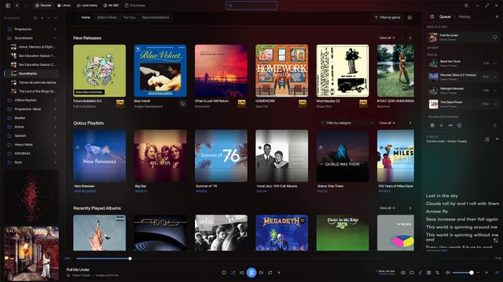

QBZ is a native hi‑fi music player for Linux, macOS and Windows.
Free and open source (MIT). A Rust engine with a Qt interface plays your Qobuz subscription, your own files and your Plex, Jellyfin or Navidrome server through one bit-perfect pipeline. No browser, no resampling, no telemetry.

▶ So What — Miles Davis · FLAC · 24/192.0 kHz · ALSA hw:1,0 · BIT-PERFECT
What it doesin one screen
- Bit-perfect output. Per-track sample-rate switching from 44.1 to 192 kHz. ALSA Direct, Core Audio Direct and WASAPI exclusive take the device for QBZ alone.
- DSD as DSD. DSF/DFF over DoP or native on ALSA. SACD ISO and discs play their stereo program.
- One queue, every source. Qobuz, local library, Plex, Jellyfin, Subsonic/Navidrome, audio CD.
- Local library, first-class. Catalog that scales to hundreds of thousands of tracks, Library Explorer, tag editor with MusicBrainz and Discogs, CUE, CD ripping to FLAC.
- Qobuz Connect renderer and controller with LAN pairing. Chromecast and DLNA casting.
- Desktop. MPRIS, tray, notifications, Vim keymap, 30+ themes, auto-theme from your desktop.
- Import playlists from Spotify, Apple Music, Tidal, Deezer, files, ListenBrainz and Last.fm.
- Headless. qbzd turns a Raspberry Pi into a Qobuz Connect endpoint. glibc 2.35+.
- Never: an EQ, a DSP, a download tool, a web wrapper.
Specifications
| Platforms | Linux x86_64 and arm64 · macOS Apple Silicon and Intel · Windows x64 (as-is) |
|---|---|
| Backends | ALSA (Direct hw:), PipeWire, PulseAudio, JACK · CoreAudio (Direct) · WASAPI (exclusive) |
| Sample rates | 44.1 to 192 kHz PCM, per-track switching · DSD64 / DSD128 via DoP or native on ALSA |
| Formats | FLAC, ALAC, WavPack, Ogg Vorbis, Opus, MP3, AAC, DSF, DFF, CD-DA, SACD ISO |
| Sources | Qobuz, local files, Plex, Jellyfin, Subsonic and Navidrome, optical discs |
| Web player, for comparison | Everything resampled to 48 kHz; Hi-Res and DSD not delivered. QBZ: native at every rate. |
| Interface | Qt 6 / QML on a Rust core (cxx-qt). Single process, no webview. |
| Privacy | No telemetry, no tracking. Listening history stays on disk unless you enable a scrobbler. |
| License | MIT |
Downloadpulled from GitHub Releases
 Linux
Linux
Primary platform · x86_64 and arm64
| Arch | yay -S qbz-bin |
|---|---|
| Debian / Ubuntu | APT repository (recommended) or QBZ_2.1.0_amd64.deb · glibc 2.35+ |
| Fedora / openSUSE | sudo dnf install ./QBZ-2.1.0-1.x86_64.rpm |
| Flatpak · Snap | flatpak install flathub com.blitzfc.qbz · sudo snap install qbz-player |
| AppImage · Tarball | QBZ_2.1.0_amd64.AppImage · qbz_2.1.0_amd64.tar.gz |
| NixOS · Gentoo | flake github:vicrodh/qbz · overlay media-sound/qbz-bin |
| qbzd (headless) | qbzd-2.1.0-linux-arm64.tar.gz · glibc 2.35+ |
macOS
Supported · signed builds
Recommended: independently signed and notarized builds by @afonsojramos. Not produced or endorsed by the upstream project.
$ brew install --cask afonsojramos/qbz/qbz
Windows
As-is · maintainer wanted
Windows is not currently a supported QBZ platform. The build is provided as-is.
QBZ_2.1.0_x64.msi · WASAPI exclusive, media keys, MSI installer.